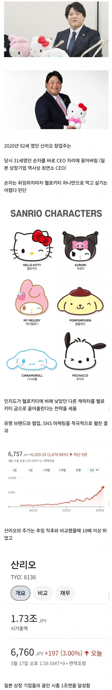
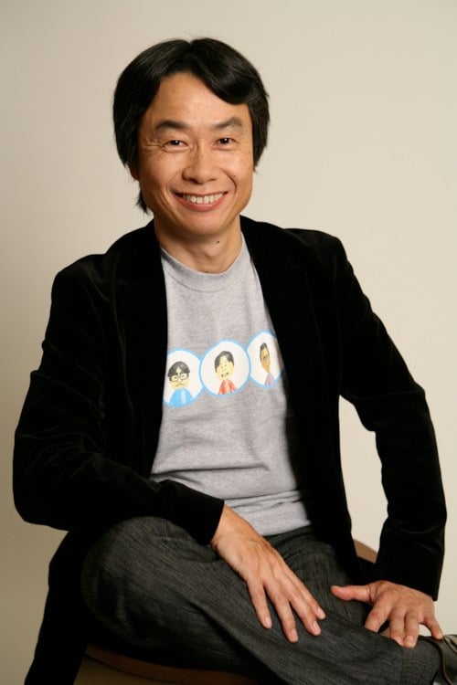
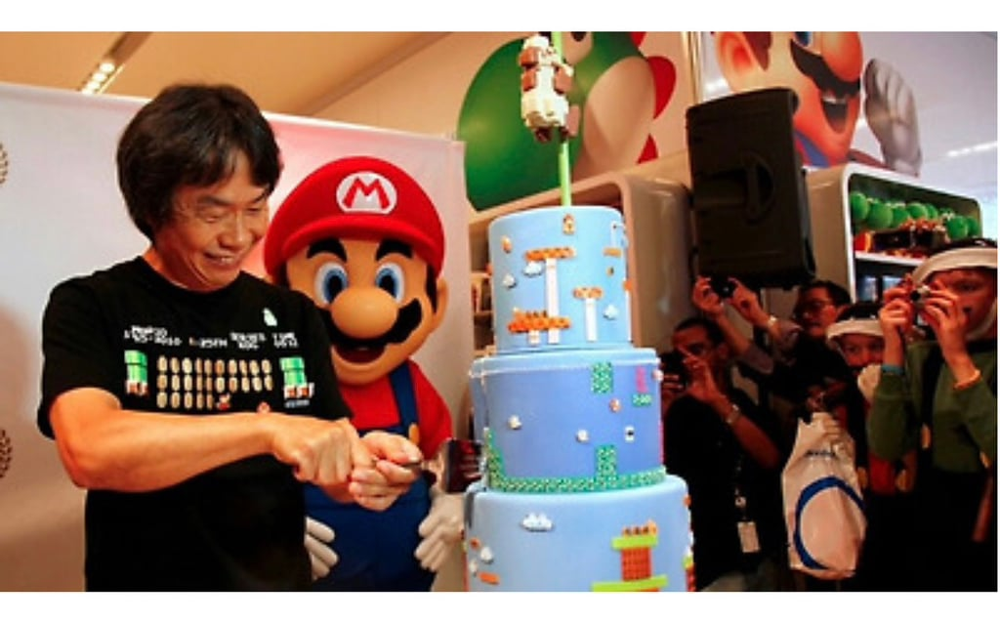
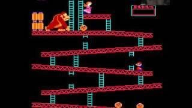
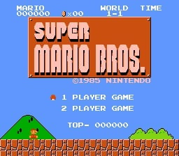
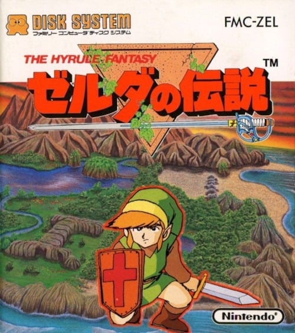

+ 추가)
닌텐도

미야모토 시게루(1952)
아버지 빽으로 낙하산으로 닌텐도에 입사.
들어올 시점쯤엔 닌텐도 망해가던 시절

그리고 이 인간이 낙하산으로 들어오고 나서 만든 대표작.
동키콩 시리즈

슈퍼마리오 시리즈

젤다의 전설 시리즈


+ 추가)
닌텐도

미야모토 시게루(1952)
아버지 빽으로 낙하산으로 닌텐도에 입사.
들어올 시점쯤엔 닌텐도 망해가던 시절

그리고 이 인간이 낙하산으로 들어오고 나서 만든 대표작.
동키콩 시리즈

슈퍼마리오 시리즈

젤다의 전설 시리즈

초록색이 젤다지?
공주는 링크다
미야모토 시게루 닝겐쟈나이..
쿠로미 좋아하는 여자는 걸러라 아무튼 걸러
최근엔 모몽가 조아하는 여자는 걸러라
3인방이 있는데 모몽가 좋아하는건 진짜 큰 문제다
쿠로미는 몰라도 모몽가는 진짜
쿠리만쥬면몰라 모몽가는 ㄹㅇ위험
이거진짜임 쿠로미시즌2임 자아의탁존나함
이시발 쿠로미 마멜은 비주얼이라도 귀엽지 모몽가는 진짜 걸러야해
모몽가도 비주얼은 귀여운디
우사기는?
왜??
모몽가 러버는 ㄹㅇ 싸패긴 하지
왜 손자로 바로 줬나했더니
아들이 사망했구나;;
혈연으로 어렵게 모셧습니다...
개쩐다
혈연 아니었으면 못데려올뻔
헬로키티가 확실히 오래된 디자인이긴하네
낙하산 타고오랬더니 사펑 트라우마팀 AV 타고 강하했네
낙하산이 아니라 헬다이버잖아
X렉카하러 돌아다니다보면 산리오 팬덤이랑 치이카와 팬덤이랑 존나 싸우더라
진짜 왤케 싸우는건지 이해가 안감
자아의탁 하는애들이라 거의 종교임
어허 모셔왔다고 해야지 낙하산이라니 그 무슨
재벌집막내아들ㅋㅋㅋㅋ
의외의 사실)
헬로키티는 공식설정으로 인간 소녀다
역시 피는 못속여
어쩌다 인기있는건지 모를애들
낙하산이 아니라 공수부대잖아
산리오 굿즈 옛날이랑 다르게 진짜 엄청나게 콜라보하고 굿즈도 다양화하고 모든 유통채널에서 판매해서 사업부 힘쓰네 싶었는데 톱이 교체되었구나
편의점 문구점 돈키호테 게임센터 같은 전통적인 판매채널 말고도 다이소, 대형, 지역 수퍼마켓, 쇼핑몰, 인지도 낮은 어패럴 브랜드의 모자, 티셔츠까지 산리오 캐릭터가 안 보이는 곳이 없음
낙하산이라 아무도 뭐라 못하니 비전을 실적으로 만들 수 있었을까
닌텐도가 동키콩부터 시작한게 아니었어? 그럼 그전엔 뭐가 있었단 말이지
최초는 화투회사일걸
역으로 낙하산이 회사를 살린 사례가 얼마나 희귀한지를 알 수 있는 사례이기도 하지.
혈연으로 겨우 모셔온 분
낙하산에 공수부대가 내려왔구나
낙하산이 아니라 공수부대 구조대였고